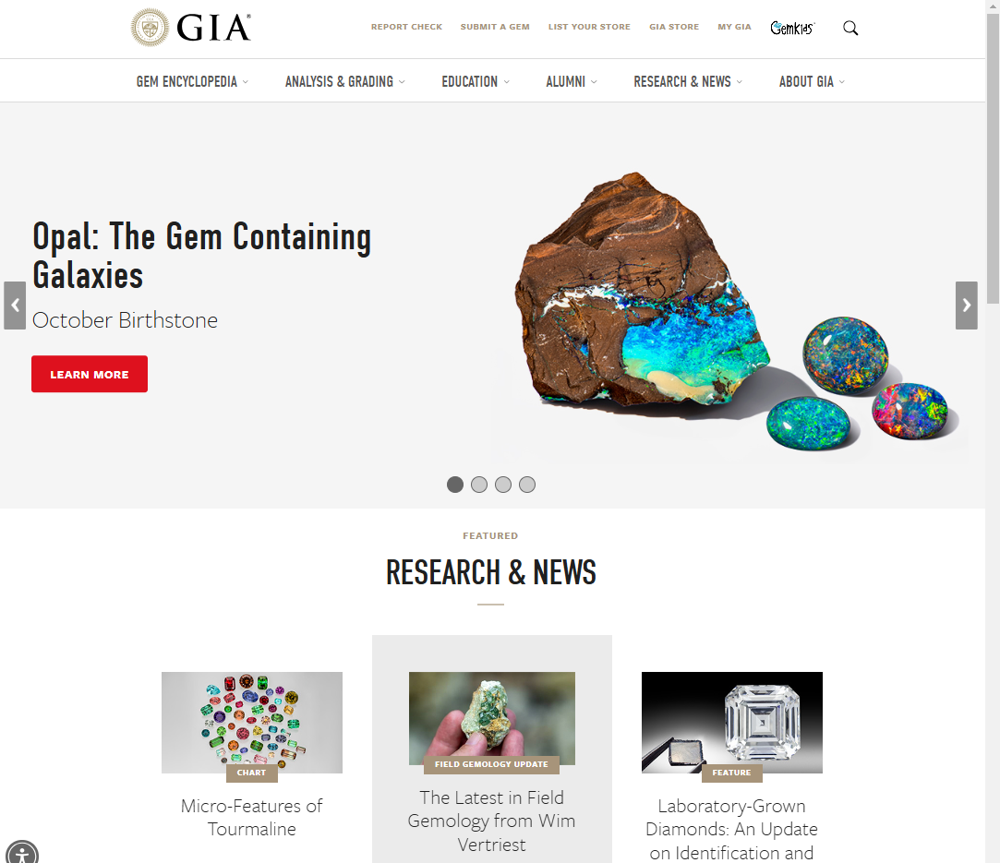

This was a rather fast module that we learned but there are definitely some good points about it that I would like to dicuss. UI/UX. UI user interface focuses more on the visually pleasing ascpect of a website, vs UX User Experince focuses more on creating a comprehensive user journey.
What I Learned
- What is the URL of the website?
https://www.gia.edu/Click to Go
- What is the name of the website?Gemological institute of America
- Who is the site's target audience?People of all ages and demographics that are interested in gemstones and semi-precious gemstones.
- How is the site organized?The site is organized in a linear fashion
- Which CRAP Design Principle does the (site) use? Provide at least one example.Contrast first and foremost, as you can see through the webpage many instances and pictures of gems brightly colored and eye-popping throughout
- What is the Audit Score according to the Accessibility Checker?61....yikes It has mobility issues for the deaf and blind, good thing they wont be able to see or hear them to figure it out!
- What is the site's effectiveness? Does it support users in completing actions accurately?Its definitely an effective site and furthermore it has an overlay that was instantiated probably to aid the mobility defects it shows from the base score. It supports users in a variety of ways and even gives an option to post a user's own site along to this site to help reach more people.
- What is the site's efficiency? Can users can perform tasks quickly?The site has a high efficiency, at least for those able to see and hear. the links on the site take users quickly to each new section and there doesn't appear to be a load time for any page that I tried to open within the site. Everything seemed aligned profeciently and items had great proximity to one another.
- How is the engagement? Is it pleasant to use and appropriate for its industry/topic?The engagement is outstanding as it has various ways that the user can interact and learn. It has a scrolling picture section that engages users in a variety of topics and it loads smoothly through each iteration. It is visually pleasing and yet also boasts robust outlay for a more professional setting.
- Make at least one recommendation to improve this website based on what you learned in this module.I would use different contrast settings to the extent of even giving a button that can switch the site to two other viewing modes, one with warmer colors, and one as a nightmode and introduce gemstones that are blacklight reactive especially for the haloween season coming up.
Copyright Rio928438. All rights reserved